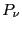
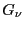
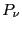
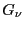

Next: Microstates and Degeneracy
Up: Molecular Simulations
Previous: Introduction
(Taken primarily from Ch. 2 of Frenkel and
Smit [1] and Ch. 3 of Introduction to Modern
Statistical Mechanics, by David Chandler [5].)
This course is centered upon one mathematical statement:
That is, the expectation value,
 , of some
observable property
, of some
observable property  is an average over all possible
microstates available to a system, indexed by
is an average over all possible
microstates available to a system, indexed by  , where  is
the probability of observing the system in microstate , and
 is the value of the measured property G when the system is in
microstate . Eq. 1 illustrates the
operation of performing an ensemble average.
, where  is
the probability of observing the system in microstate , and
 is the value of the measured property G when the system is in
microstate . Eq. 1 illustrates the
operation of performing an ensemble average.
Before even considering how to use computer simulation to make such a
measurement of a particular property for a particular system, there
are three main issues to consider:
- What is a microstate?
- What is meant by observing the system?
- How do we calculate probabilities?
In the following subsections, we give a cursory treatment of
elementary statistical mechanics aimed at answering these questions.
The aim is to give the student an appreciation (not a mastery) of the
basic physics that underlies a majority of current molecular
simulation.
Subsections
Next: Microstates and Degeneracy
Up: Molecular Simulations
Previous: Introduction
cfa22@drexel.edu